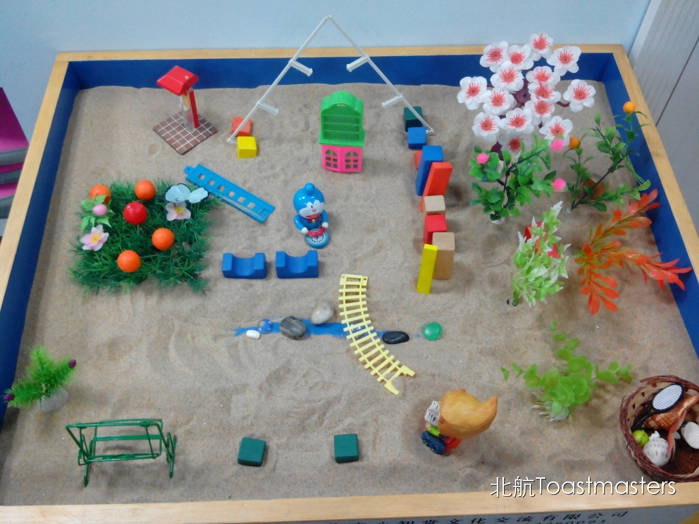
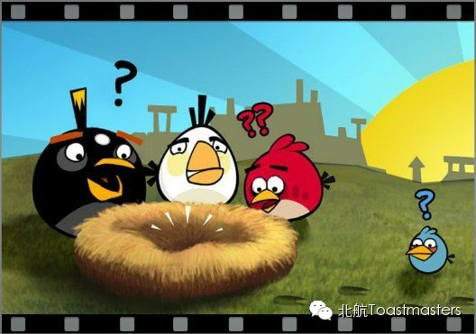

The First Time
Time: 19:30-21:30, Friday, Dec. 12nd
Venue: Room A209, New Main Building, Beihang University
Toastmaster: Sophie
Table Topic Master: Keven
Remember the first time you dressed up yourself? Remember the first time you went to school alone? Remember the first time you got a full score? Remember the first time you met your best friend?... There are so many first times throughout our life. They are the most precious moments. They are moments full of strong feelings. They are feelings that we can hardly forget. Sometimes, it's a good beginning. Sometimes, it isn't. Anyway, everything just starts from its first time, isn't it?
Prepared Speech
My Sandplay
CC1 Joy

Do you know what is sandplay? No? Look at the left side of this page. In my opinion, it is only a toy for kids to play games like Guojiajia. But, for a psychologist, it can be a powerful tool. Joy's major is psychology. Are you curious about the secret behind her sandplay? Just come.
Prepared Speech
You Are Never Really Ready
CC2 Lucia
"Ready? Go!" When people say that, actually, they don't care you are ready or not. They are just telling you to go. It seems that time is always so limited that we can hardly get ready. But is it true? Maybe we can never get really ready. This time, let's find out the answer with Lucia.
Prepared Speech
Game
CC3 Joshua

Nobody grows up without playing games, right? Human beings need to play game to relax, have fun and balance their life. Joshua is really a romantic man. Last time, he brought us to a magic world. Will he bring an unexpected game? I can't wait to find the answer.
Map
Our meeting venue is RoomA209, New Main Building, Beihang University (北航新主楼A209房间). Click here to see large map. And you can phone to Deron for help.
TEL: 180-0125-3933
See you in the meeting!

https://mp.weixin.qq.com/s/2gBEHXH0vbNJoXvEDHFOJw
本页为抢救式本地归档，图文已永久保存。